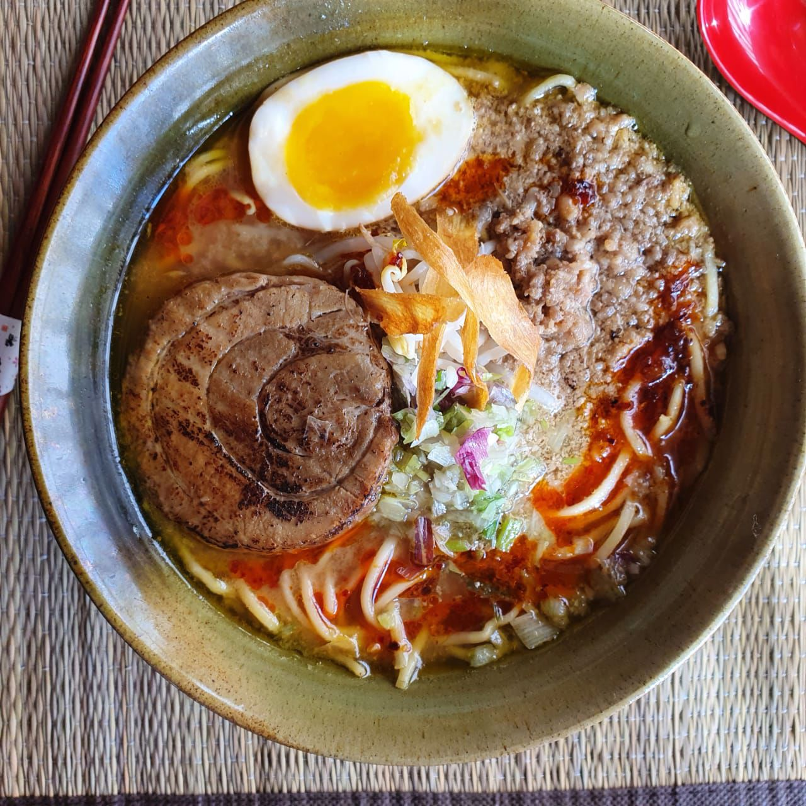

NUESTRA CARTA
SHIO RAMEN

Fideos alcalinos en caldo assari (estilo liviano) de pollo, aceite de ajo, chashu (panceta cocida a fuego lento en soja), algas wakame, verdeo, ajitama (huevo marinado salsa de chashu).
CLASSIC SHOYU

Fideos alcalinos en caldo assari de pollo (estilo liviano) con tare especial de shoyu (blend de salsa de soja), 2 fetas de delicioso chashu (panceta cocida a fuego lento en soja) , ajitama entero (huevo marinado en salsa de chashu), verdeo y cebolla morada.
NARUTO UZUMAKI

Nuestra versión del plato favorito de Naruto Uzumaki. Fideos alcalinos en caldo de pollo y cerdo, tare de miso, ajitama (huevo marinado salsa de chashu), chashu de 2 a 5 unidades (segun el tamaño) (panceta marinada en soja cocida a fuego lento) , narutomaki X2 (pastelito de pollo) , sésamo molido, verdeo, cebolla.
MISO
Fideos alcalinos en caldo de pollo con tare de miso (pasta de poroto fermentado típico de la comida japonesa), ajitama, chashu (panceta de cerdo cocinado a fuego lento) , picada de cerdo, crocante de batata, cebolla blanca, verdeo. (OPCIONAL PICANTE)